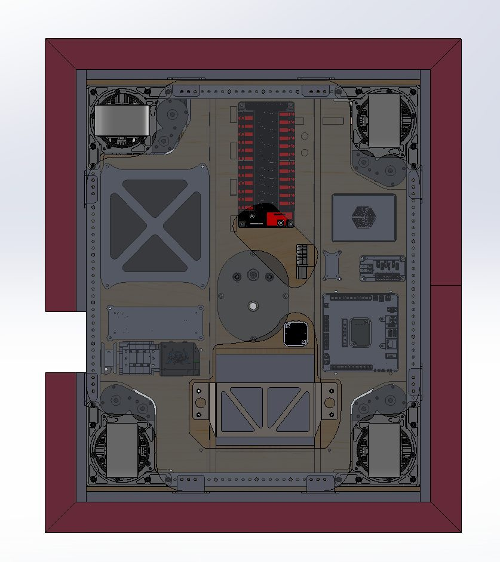

I design the electrical and mechanical architecture of competition robots, then build them and verify they work. On Team 1771’s 2026 robot I owned the complete electrical layout — component placement, power distribution, and CAN bus routing — along with the CAD of every mechanical subsystem and its integration into the frame.

Fig. 1 — Blitz electrical layout: component placement and CAN bus routing across the baseplate
My earliest engineering memory is my dad handing me a screwdriver in preschool to open up a TV remote. Four years on FRC Team 1771 turned that into a practice: I started on CAD support, moved to owning subsystems, and by my senior season was designing whole robots — frame, mechanisms, and the electrical board they all run on.
I like problems where the answer has to survive contact with the physical world. A CAN bus topology that looks fine in CAD still has to route around a moving intake; a model that scores 99.9969% in a notebook still has to be honest about where its training data came from. Most of what I have learned came from finding out which of my assumptions were wrong, and I have tried to keep those moments in the write-ups rather than sand them off.
Education
Georgia Tech
B.S. Computer Engineering · Aug 2024 – present · 18 credits · GPA 3.83 · expected May 2028
Univ. of North Georgia
Dual enrollment · Aug 2024 – May 2026 · 16 credits · GPA 4.0
Skills
Programming
Python, Java
Hardware
Arduino IDE, ESP32, CAN bus networking, brushless motors and servos, CNC mill and router, laser engraver
Software
SolidWorks, OnShape, Google Sheets and Excel data pipelines, JotForm
Communication
Technical documentation, team training materials, competition strategy presentation and data displays
I was the first hire at the location. I designed and taught an integrated curriculum spanning VEX Robotics, coding (Python, Java, Scratch), and chess for ages 4–16, which brought 100+ students into the center. I also planned and ran a multi-week summer camp on my own — curriculum, logistics, and keeping a room of kids engaged for four hours a day — and that camp is what turned the robotics offering into a full-time course.
Cricket — team captain, multiple teams
Jul 2019 – present
I captained multiple teams, was selected to the Georgia state team three years running, and was named MVP of the state final. A bowling injury put me in rehab through 2024–2025; I am now a member of the Georgia Tech Cricket Club. The rehab is what led directly to the bowling risk analyzer.
Research
Beyond the scan: how machine learning will advance brain tumor detection
AP Research · Individual researcher · Aug 2025 – May 2026
Medical imaging research usually reports accuracy on a comfortable amount of training data. Rare tumors do not come with a comfortable amount of training data. I wanted to know which ensemble architectures hold up as the training set shrinks, because that is the situation a real rare-tumor classifier is actually deployed into.
I benchmarked five ensemble architectures on rare brain tumor MRI classification, repeatedly shrinking the training set toward a low-data scenario and measuring how each degraded. DenseNet169-LIME-TumorNet was the most robust of the five.
I built LIME into that architecture deliberately rather than as an add-on. A classifier that says “tumor” without showing which region of the scan drove the call is not usable by a radiologist, and in a low-data regime interpretability is also how you catch a model that has latched onto a scanner artifact instead of the pathology.
What I would do differently
My shrink-the-training-set procedure measured robustness but not calibration — I recorded whether the models stayed accurate, not whether their confidence stayed honest as the data thinned. For a clinical decision-support tool that is arguably the more important number, and I would add it if I ran this again.
[ASK ANISH] Is there a written paper, poster, or repo for this? A linkable
artifact belongs here — if the full paper exists, link the PDF directly.
Contact
I am looking for an embedded systems or hardware internship for Summer 2027, and I am also glad to talk with Georgia Tech labs about research positions during the school year.